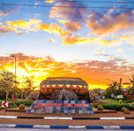
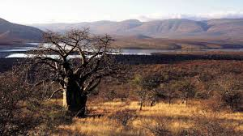

Tshaulu 

Musina 
Welcome to our list of volunteer projects in various countries of Africa. You can use the filters below to narrow down your search based on your interests, passions and requirements. We have a number of conservation and animal rescue/rehabilitation projects, as well as social programmes and volunteering opportunities with children. We also have medical volunteering projects and a fun category which we call voluntourism. Enjoy the search, and let us know if you have any questions.